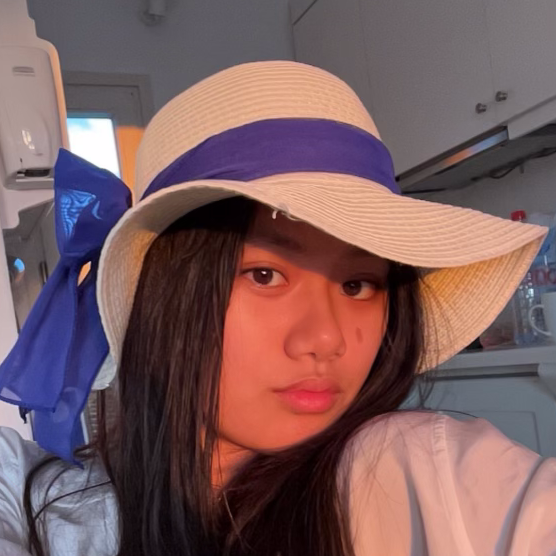

The Team

Hi there! My name is Sophia
and I am the founder of Project Save our Skin.
Our organization is located in Chicago, IL and we aim to donate skincare to those in need.
Years ago, I started my skincare journey and learned how important skincare is for both
health and confidence. Over time, I accumulated tons of skincare products, some of which
I barely used. After talking to many peers, I learned that I was not the only one who
had unused skincare at home. In fact, many people said they had made impulsive skincare
purchases during quarantine, bought one too many travel sized products for their
vacations, or even went through their own skincare journeys. Therefore, I started
Project Save our Skin in order to put the extra products to good use and promote
the ideas of healthy skin.
Erika Ilkiu is an exec board member at Project Save Our Skin. She is a committed swimmer who enjoys painting and drawing. She is is very excited
about the idea continuing to swim competitively in college!
Jessica Ji is an exec board member at Project Save Our Skin. She plays the cello and loves to dance. She would love
to continue her journey of dance in college if possible!
What We Do
We donate skincare to homeless
shelters and domestic violence shelters in the Lake County area.
We collect skincare products in return for stickers; you donate one skincare product, we give you one sticker.
After you donate your product, we take it along with all the other donated products and distribute them amongst
several shelters in the area. Once people receive them, they can use the skincare to achieve healthy skin and
radiant confidence!